Результаты на программе "Измени себя за 90 дней":
Для получения результата в Программе 90 дней каждый шаг имеет свое большое значение!
1 шаг - Детокс. Обновляются и омолаживаются клетки, выводятся токсины из организма.
2 шаг - Антипаразитарная программа.Выводятся паразиты, грибки, бактерии.
3 шаг - Очистка кишечника. Для лучшего усвоения витаминов, минералов и других полезных веществ.
4 шаг - Питание и восстановление органов и систем. Мы даем телу качественный строительный материал, из которого будут строиться новые органы и создаваться внешняя красота.
На каждом этапе мы можем выбрать программу СТАНДАРТ или ЛЮКС
🥗 1 шаг. Детокс - выведение токсинов и правильный водный баланс.
Задача этого месяца – это научиться пить воду хорошего качества в нужном количестве для того, чтобы наши клетки могли очищаться. На первый месяц у нас идет программа Корал Детокс или Корал Детокс Плюс. Она рассчитана на месяц. На ней выводятся водо- и жирорастворимые токсины.
Почему мы начинаем именно с воды?
Потому что все процессы в организме происходят с ее участием - доставка кислорода и строительных материалов в клетку, вывод токсинов, обеспечение чистоты нашей внутренней среды.
Вода с Корал-Майн лежит в основе всех программ Coral Club. Она делает воду полезной и биодоступной. Такая вода способна напитать каждую клеточку и вывести из нее токсины. Это ценнейший дар природы с Японских островов, где люди живут более ста лет, сохраняют работоспособность и не знают болезней цивилизации.
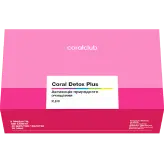
В Корал Детокс Плюс также входят натуральные продукты, которые помогают справиться с интоксикацией, улучшить работу почек и кишечника, дать организму энергию.
Представьте себе! Человек начитает пить эту программу и уже через несколько дней он чувствует результаты. У него нормализуется сон. Проходит еще неделя - и желудок работает как часики. А дальше у кого что: уходит отечность, идет нормализация веса, приходит в норму давление, восстанавливается костно-мышечная ткань.
💎 Программа ЛЮКС
К Корал Детокс Плюс мы добавляем:
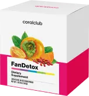
Фан Детокс - разгрузка, защита и восстановление печени. Это помощь организму при большом количестве медикаментов, алкогольном отравлении или обилии жирной пищи.
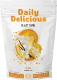
Протеиновый коктейль Бьюти Шейк - это низкокалорийное питание. Им можно заменять завтрак, ужин или оба приема пищи. Он вкусный и сытный. Кроме трех видов белка в нем есть коллаген, 11 витаминов и минералов для красоты.
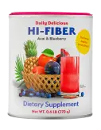
Хай-Файбер - это вкусный коктейль из разных видов клетчатки. Он улучшает опорожнение кишечника.
🐛 2 шаг - Антипаразитарная программа
Вирусы, грибки, бактерии, паразиты - все это параллельный мир, который жил еще до нас и будет жить дальше.
У нас происходит контакт с паразитами через рукопожатия, домашних животных, деньги, общественные места, не до конца прожаренные мясо или рыбу, зелень или ягоды с рынка или нашего огорода, которые мы не моем кипятком. И многое другое.
Бороться с этим бесполезно. Как бы мы ни старались, но не сможем полностью оградиться от него. Нужно создать такие условия в организме, чтобы патогенная флора не могла развиваться, чтобы ей было не комфортно. Тогда она сама будет стараться покинуть это "жилище".
Создать такую среду мы можем с помощью горьких трав в капсулах (этими рецептами пользовались еще наши бабушки), а также соответствующего питания.
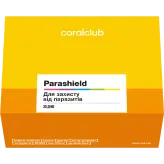
Поэтому на втором этапе у нас идет программа Парашильд. В ней есть не только глистогонные продукты, но также и те, которые помогут организму как можно быстрее избавиться от непрошенных гостей, убрать последствия их пребывания, наладить пищеварение и улучшить работу дренажных систем. Программа длится месяц.
💎 Программа ЛЮКС
К Парашильду мы добавляем:
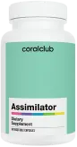
Ассимилятор - это комплекс ферментов, улучшающий пищеварение. Также он расщепляет грибок и воздействует на яйцеглист.
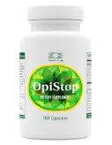
Опистоп - для очистки печени от паразитов.
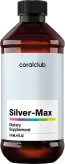
Сильвер Макс - хороший антисептик. Он воздействует более чем на 300 видов бактерий.
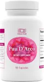
Кора муравьиного дерева - для укрепления иммунитета, а также очищения от грибков и вирусов.
🌱 3 шаг - Очистка кишечника
Современный ритм жизни заставляет нас питаться большим количеством неорганической пищи, которая долго хранится. В нее добавляют стабилизаторы, усилители вкуса, консерванты. Это приводит к тому, что пища не до конца переваривается и откладывается в виде шлаков на стенках кишечника.
Какие показатели говорят о зашлакованности организма? Это головные боли, аллергии, синяки под глазами, неприятный запах изо рта, лишний вес, проблемы с пищеварением, проблемная кожа. В компании Coral Club есть готовые решения.
На 3 этапе наше тело уже очень хорошо подготовлено к очистке, начальная разгрузка произведена. Токсины спустились в кишечник, теперь их, остатки пребывания патогенной флоры и шлаки, накопленные годами в изгибах кишечника нужно мягко вывести наружу. Ведь именно в кишечнике усваивается основное количество всех полезных веществ. При этом сохраняется привычный ритм жизни.
Здесь к нам на помощь приходят программа Коло-Вада Пэк, которая есть в двух вариантах: классическая или облегченная. Или в некоторых случаях комплекс Здоровый кишечник.
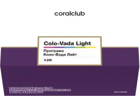
Коло-Вада - это жемчужина среди очисток. Она длится 14 дней и очищает не только кишечник, а полностью весь организм. Ее можно сравнить с генеральной уборкой в теле. Благодаря программе Коло-Вада биологический возраст уменьшается минимум на 5 лет, и вы молодеете душой и телом.
Здоровый кишечник тоже помогает очистить и восстановить работу всего желудочно-кишечного тракта. Он очень прост в использовании. В него входит 17 продуктов и упаковка Корал-Майн.
Представьте себе обрюзгшего, вялого, уставшего от жизни человека с потухшими глазами. За пару недель этот человек преображается. Становится стройнее и активнее, у него улучшается кожа, в его движениях появляется уверенность и легкость. А в глазах блеск и задор.
💎 Программа ЛЮКС
К Коло-Вада Пэку мы добавляем:
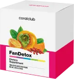
Фан Детокс - помогает дополнительной очистке печени.
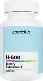
Н-500 - дает больше энергии на программе и выводит дополнительное количество токсинов.
💧 4 шаг - Питание и восстановление органов и систем
В нашем организме 70 триллионов клеток. Каждый день миллионы умирают и миллионы новых рождаются. А питание – это строительный материал для них. И от того, насколько оно полноценное, зависит больной или здоровой родится новая клетка.
Питание сегодня стало другим, чем было даже 50 лет назад. В первую очередь это касается качества продуктов. В них стало гораздо меньше полезного. Для того, чтобы овощи и фрукты быстрее созревали, их обрабатывают химикатами. Для того, чтобы продукты хранились (молоко, мясо, даже хлеб) в них добавляют консерванты и антибиотики. Молоко может стоять год в холодильнике.
Сейчас даже местное яблоко можно разрезать, и оно не почернеет. А о чем это говорит? О том, что в нем нет железа. Если лет 50 назад можно было съесть одно яблоко и получить свою суточную норму железа, то сейчас для этого нужно съесть 2-3 кг яблок, и то еще не факт. Чтобы получить норму селена для щитовидки, нужно съесть 12 яиц; витамина С, который нужен нам для иммунитета и не только - 12 лимонов или 42 помидора. Для того, чтобы получить дневную норму витамина Е (а его любит репродуктивная система, это витамин молодости, он нужен для спортсменов) нужно съесть или выпить 2 литра оливкового масла. И так далее.
Все это связано с тем, что почвы истощены, другая экология, другие технологии производства продуктов питания. Ученые подсчитали, чтобы получить весь спектр необходимых питательных веществ за день, нам нужно съедать 52 кг пищи!
А если представить, что для нашего удобства из продуктов питания выделили сами питательные вещества. И по особым технологиям в концентрированном виде поместили в капсулу. И чтобы восполнить свою норму железа, например, мы можем вместо 2-3 кг яблок добавить к нашему обычному питанию несколько капсул и восполнить норму. Это удобно! И сейчас по такому пути идет весь мир.
Конечно, у каждого есть свои любимые блюда. У кого-то салаты, у кого-то мясо, у кого-то борщ. Но что же делать нашей клетке? Она этим не питается и постоянно остается голодной. А для того, чтобы быть здоровой и полноценно воспроизводить потомство, ей каждый день нужно всего 5 групп питательных веществ: аминокислоты, минералы, витамины, ферменты и полиненасыщенные жирные кислоты. Откуда ей все это брать?
И так как мы не можем съедать ежедневно 52 кг пищи, мы будем искать эти вещества в концентрированном виде. И мы будем искать качественный продукт. В супермаркете Coral Club есть большой ассортимент питания на любой вкус: в капсулах, чаях, коктейлях - кому как удобно. Консультант поможет подобрать программу именно для вас, для восстановления ваших систем и органов, которые в этом нуждаются.
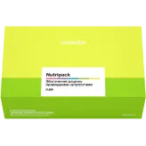
Стандартный набор для восстановления - это программа Нутри Пэк. В нее входят продукты, которые компенсируют ежедневные потребности клетки в нутриентах.
💎 Программа ЛЮКС
К программе Нутри Пэк мы добавляем:
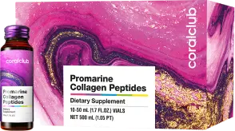
Коллаген Промарин - это жидкий морской коллаген, который идеально усваивается. Коллаген нужен нам для красивой и подтянутой кожи лица и тела.
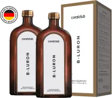
Би-Лурон - это питьевой комплекс гиалуроновой кислоты и хондроитина. Он помогает восстановить подвижность суставов и упругость кожи.
Программу 90 дней можно проходить несколько раз подряд для улучшения результата!
Важно!
Для улучшения вашего результата на Программе 90 дней рекомендуется исключить из питания:
Сахар и изделия его содержащие, газированные напитки, консервированные и рафинированные продукты, уксус, белая пшеничная мука, продукты длительного хранения и содержащие Е-добавки.
Для составления индивидуальной программы свяжитесь с консультантом
ваш консультант

наталья талда
+380 50 917 54 63


Для приобретения продукции с -20% скидкой - пройдите по ссылке >>>.
После регистрации с вами свяжется консультант, поможет выбрать продукт и осуществить заказ продукции через сайт в вашей стране.